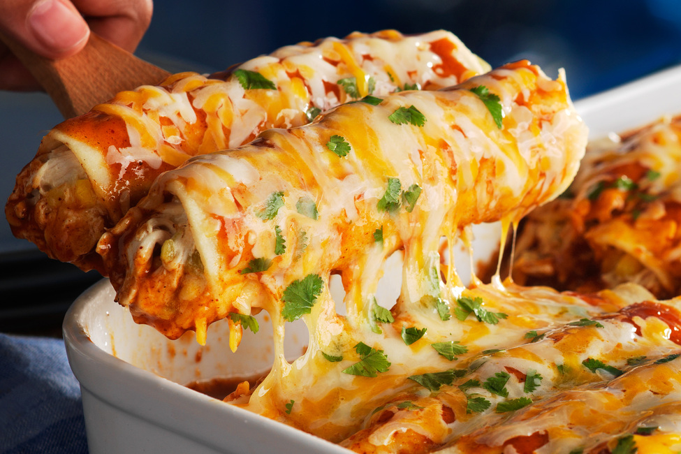
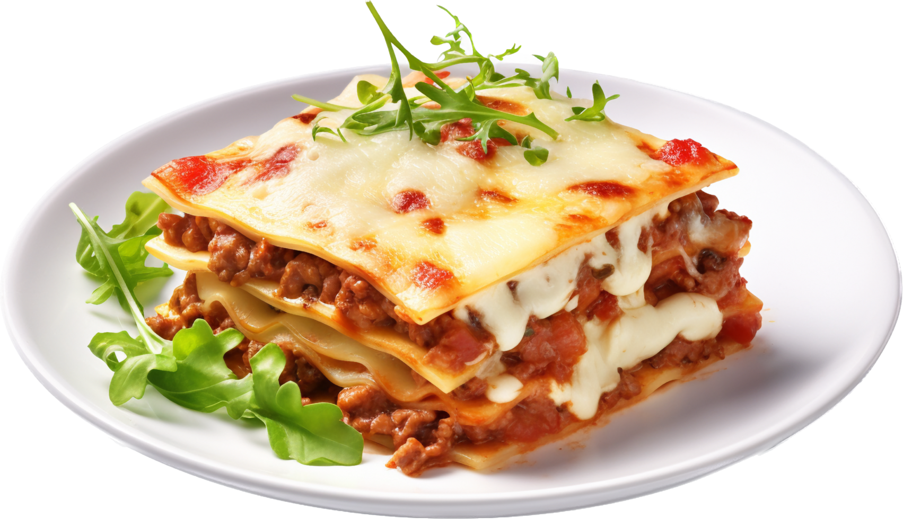

Here Is The Recipe
- 3 cans (10 oz. each) red enchilada sauce, warmed
- 3-1/2 cups shredded cooked chicken
- 1 cup frozen corn
- 1 can (4 oz.) chopped green chiles, undrained
- 1 pkg. (8 oz.) KRAFT Mexican Style Shredded Four Cheese with a TOUCH OF PHILADELPHIA, divided
- 1 cup sour cream, divided
- 16 corn tortillas (6 inch), warmed
- 1/4 cup chopped fresh cilantro
Make Now
- Heat oven to 375°F.
- Spread 1 cup enchilada sauce onto bottom of 13×9-inch pan sprayed with cooking spray.
- Combine chicken, corn, chiles, and 3/4 cup each cheese and sour cream; spoon down centers of tortillas. Roll up.
- Place, seam sides down, over sauce in pan; top with remaining enchilada sauce. Cover.
- Bake 20 min. or until heated through. Sprinkle with remaining cheese; bake, uncovered, 5 min. or until melted.
- Serve topped with remaining sour cream; sprinkle with cilantro.
